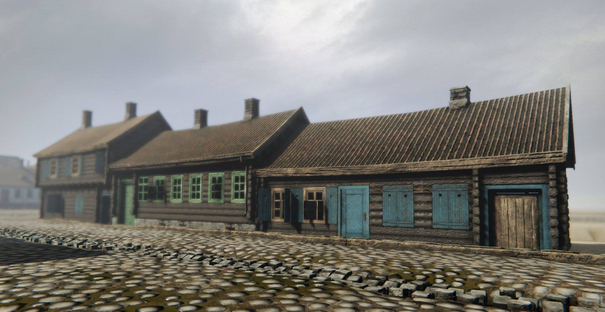
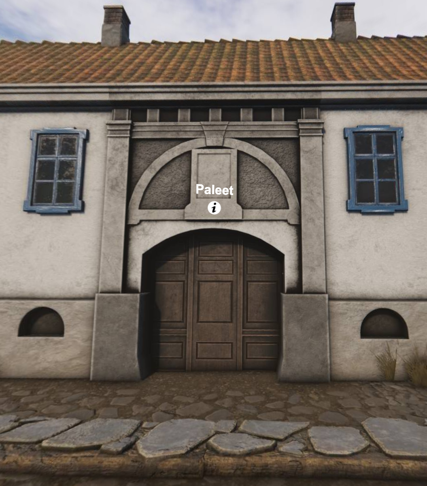

Hva går undervisningsopplegget ut på?
Møter kompetansemål
Læreplan i historie - fellesfag i studieforberedende utdanningsprogram (HIS1-02)
Tverrfaglighet:
Dette undervisningsopplegget trekker også på ferdigheter innen matematikk.
Kommentar
I modifisert versjon vil dette undervisningsopplegget også kunne møte kompetansemål etter 10. årssteget
Oslo, eller Christiania som byen het på 1700-tallet, var en by med store sosiale forskjeller. Der bodde det alt fra landets mektigste trelasteksportører, middels store kjøpmenn og håndverkere, soldater, småkremmere og folks om syslet med småproduksjon av varer, til fattigfolk, foreldreløse og kriminelle.
Å fange økonomisk og sosial ulikhet
Å måle sosiale forskjeller er selv i dag ganske utfordrende. Skal man gjøre det for fortidige samfunn er det mildt sagt vanskelig. Formue og inntekt er vanlige indikatorer som brukes i dag, men de er i liten grad tilgjengelig bakover i tid. Om de er, så dekker de ofte bare en liten del av befolkningen, og reflekterer sjeldent alle de faktiske ressursene som var tilgjengelig, slik som eget jordbruk.
Historikere som jobber med ulikhet må derfor se seg om etter annet som kan fungere som indikator. For siste del av 1700-tallet og tidlig på 1800-tallet er branntakster, altså brannforsikringspapirer, en kilde som kan gi innblikk i økonomisk og sosial ulikhet i norske byer.
I Christiania ble det i 1766 ble gjort et branntakstforarbeid der alle bygg i byen ble verdivurdert og kort beskrevet, samt eieren notert. Ikke bare gir dette materialet unik bygningshistorisk informasjon, men verdivurderingen gjør det mulig å få innblikk i Oslos sosiale og økonomiske geografi. Tilsvarende informasjon er tilgjengelig i transkribert form i 1797, men da bare for de vel 20% til 30% som var forsikret i den offentlige brannkassen.
For mer om branntakstene kan du lese her.
Oppgaver
Bruk branntakstene i Branntakstdatabasen til å finne svar på følgende: